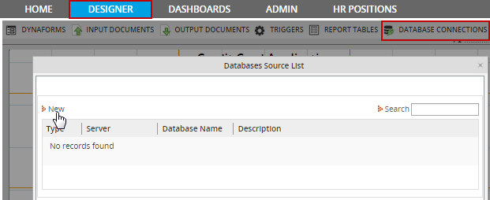
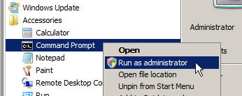

- Overview
- Prerequisites
- Creating a New Database Connection
- MySQL
- PostgreSQL
- Microsoft SQL Server
- Windows
- Linux/UNIX
- If the SQL Server database does not use UTF-8 encoding
- Setup FREETDS in Linux/UNIX
- Collation Database Configuration
- Oracle
- Windows
- Red Hat/Cent OS/Fedora
- Debian/Ubuntu
- Checking the Oracle installation
- Oracle Troubleshooting
- Converting Oracle to UTF-8
- Other Types of Databases
- Discovering Ports and Debugging
Overview
Each ProcessMaker workspace maintains 3 MySQL databases to store internal information about processes, user permissions and reports. Nonetheless, ProcessMaker can also be configured to connect to external databases, allowing an organization to integrate ProcessMaker with other DBMS and business applications which utilize databases.
ProcessMaker uses Propel library to map between ProcessMaker's PHP classes and databases. Propel allows access to the following DBMS MySql, Microsoft SQL Server, PostgreSQL, and Oracle.
ProcessMaker automatically detects which database modules for PHP are installed on the server. For example if the php-pgsql module is installed on the ProcessMaker server, ProcessMaker will offer the option to connect to PostgreSQL databases.
Prerequisites
An Internet connection is required to access external databases and to download third-party components not supported by ProcessMaker that you may not have installed.
Creating a New Database Connection
To create a new database connection, open a process by going to DESIGN tab and then go to DATABASE CONNECTION, the Databases Source List will display as the image below.

At the top of the list of existing database connections, click the "New" link to define a new database connection.

Fill in the following information:
- Engine: Select the type of database, which can be MySql, PostgreSQL, Microsoft SQL Server,
or Oracle. ProcessMaker will only offer databases in the dropdown list which have PHP extensions installed
on your server. See the documentation below to install the required PHP extensions for each type of database.
After installing one of the extensions, remember to restart the Apache server for the new extension to
be loaded in PHP.
- Encode: If MySQL or PosgreSQL is selected in ProcessMaker version 1.2-2425 and later, the option Encode will appear below Engine to allow the character encoding of the database to be selected. Look up the encoding of your external database.
- Select Connection Type: If Oracle is selected, then a field will appear to select whether to connect to the database normally or to use TNS (Transparent Network Substrate), which is Oracle's proprietary networking protocol.
- Server: IP address or domain name where the database source is installed.
- Database Name: The name of the database to use.
- Username: The username to log into the external database.
- Password: The password to log into the external database.
- Port: The port used by the external database. If this field is left empty, the routine will use the default port, which is 3306 for MySQL, 5432 for PostgreSQL, 1521 for Oracle, and 1433 for SQL Server. If unsure which port is being used by a database see Discovering Ports and Debugging below.
- Description: Add any additional information about the external database.
Once you have filled out this information, you need to test the connection by clicking on the Test Connection button. The test routine verifies hostname, port, service, the user access, and the existence of the database, as shown in this illustration:

If the test is successful, then click Create to set up the connection. After that the database connection will be available for the current process. It can be used in SQL SELECT statementsin DynaForms fields and with the executeQuery() function in triggers.
Configuring the TNS
Note: Use this configuration if using ProcessMaker v. 2.8 or later.
In order to configure the TNS the tnsnames.ora file must be edited, create this If this file does not exist. This file is located at:
/usr/lib/oracle/11.2/client64/lib/network/admin/tnsnames.ora
This location will depend on the Linux distribution used.
Then, modify the file with the following content:(DESCRIPTION =
(ADDRESS_LIST =
(ADDRESS = (PROTOCOL = TCP)(HOST = 192.168.11.92)(PORT = 1521))
)
(CONNECT_DATA =
(SERVICE_NAME = TEST)
)
)
MySQL
All the necessary modules should already be installed in order to use an external MySQL database, since those same modules are needed to use the internal databases used by ProcessMaker.
By default MySQL servers are set up to only receive local connections from the localhost. If ProcessMaker is trying to connect to a MySQL server on another machine, then that server will have to be configured to allow external connections. Edit the my.cnf file of the MySQL server and comment out the line:
Then reload or restart the MySQL server. To check whether MySQL is listening for external connections, in Windows issue the command:
You should see a line such as:
In Linux/UNIX, use the command:
You should see a line such as:
When setting up a Database Connection to an external MySQL database, it is necessary to select the character encoding, such as Latin-1 and UTF-8. To find out the character encoding used by a MySQL database, log into MySQL and change to the database and issue the status command:
Look for the "client characterset" which is the character set in which ProcessMaker will send queries to the MySQL database and the "Conn. characterset" which is the character set which MySQL will send information back to ProcessMaker.
In the configuration of ProcessMaker's Database Connection, set Encode to the character set used by "Client characterset and "Conn. characterset". ProcessMaker expects the Client and Connection character set to be the same. If they aren't the same, change them to be the same. You can change them temporarily with:
To change them permanently, add the following lines to my.cnf:
Then reload or restart the MySQL server.
PostgreSQL
In order for ProcessMaker to connect to a PostgreSQL database, the PostgreSQL client software and the PHP module "pgsql" has to be installed on the same machine as the ProcessMaker server. If the PosgreSQL database does not use the UTF-8 character set and it contains non-ASCII characters, then see this bug.
If the PostgreSQL database is located on a different server than the ProcessMaker server, remember to configure PostgreSQL to allow for connections from the ProcessMaker server.
Windows
Download the pgInstaller for Windows and install the PostgreSQL client software (and the server as well if you plan on running PostgreSQL server from the same machine as the ProcessMaker server).
Then go to the directory where you installed PHP and verify that you have
the dynamic link libraries php_pgsql.dll and php_pdo_pgsql.dll located in the ext directory. If you used the ProcessMaker Windows Installer, these files
can be found at: C:\Program Files\ProcessMaker\php\ext\
Then enable PHP's PostgreSQL modules, by opening the PHP configuration
file php.ini with a plain text editor. If you used the ProcessMaker
Windows Installer, it will be located at:<INSTALL-DIRECTORY>\php\php.ini
Look for the "Windows Extensions" section and uncomment the PostgreSQL modules by removing the semicolon (;) from the beginning of the following lines:
Then restart the Apache server to use the new PHP configuration, by either rebooting or by going to the command line (located at Start > All Programs > Accessories > Command Prompt) and issuing the command:
To verify that PHP is now using the PostgreSQL modules, create a file named info.php with a bare text editor containing:
and save it to your workflow\public_html\ directory, which generally will be found at: C:\Program Files\ProcessMaker\apps\processmaker\htdocs\workflow\public_html\
Then, open your web browser and direct it to http://localhost/info.php to verify that the pdo_pgsql and pgsql extensions are enabled in PHP.
Then, open ProcessMaker and go to Processes. Open a process and go to DATABASE CONNECTIONS and click on the New link. PostgreSQL should now be an available option under theEngine dropdown box.
GNU/Linux or UNIX
It is best to install the PostgreSQL client and PostgreSQL's PHP module using the repositories of your distribution.
Red Hat/Cent OS/Fedora:
Login as root and issue the
commands:
Debian/Ubuntu:
Login as root and issue the commands:
SUSE/openSUSE:
Login as root and issue the commands:
After installing, verify that the pgsql and pdo_pgsql modules are enabled in PHP with the command:
Then, open ProcessMaker in a web browser. Go to PROCESSES and open a process. Then, go to DATABASE CONNECTIONS and click on the New link. PostgreSQL should now be an available option in the Engine dropdown box.
Microsoft SQL Server
To connect ProcessMaker to SQL Server databases, either install MS SQL Client Tools on Windows machines or install FreeTDS on Linux/UNIX machines.
Windows
If Microsoft SQL Server is installed on the same machine as ProcessMaker, then ProcessMaker should automatically detect it and it should be listed as an available option under Database Connections. Otherwise, install the SQL Client Tools which can be found on the Microsoft SQL Server CD. Configuration of the client will require installation of all the tools. If the SQL Server CD isn't available, make a copy of SQL Server's dynamic link library found at \winnt\system32\ntwdblib.dll on a machine which has SQL Server or SQL Client Tools installed. Then copy the ntwdblib.dll file into the \winnt\system32 directory of your ProcessMaker server.
Make sure that the version of ntwdblib.dll matches the version of SQL Server. For instance, the dynamic link library for SQL Server 2003 will not work to connect to SQL Server 2005.
Then edit the php.ini file, that is generally located at C:\Program Files\ProcessMaker\php\php.ini, to enable the mssql extension:
Then restart the Apache server to use the new PHP configuration, by going to the command line (located at Start > All Programs > Accessories > Command Prompt) and issuing the command:
To verify that PHP is now using the mssql extension, create a file named info.php with a bare text editor containing:
and save it to your workflow\public_html\ directory, which generally will be found at: C:\Program Files\ProcessMaker\apps\processmaker\htdocs\workflow\public_html\
Then, open your web browser and direct it to http://localhost/info.php to verify that the pdo_mssql and mssql extensions are enabled in PHP.
Then, open ProcessMaker and go to Processes. Open a process and go to DATABASE CONNECTIONS and click on the New link. MS SQL should now be an available option under theEngine dropdown box.
Setup a UTF-8 Connection to a MSSQL database
The following steps must be followed to solve problems with characters different from English:
- Download the php_dblib.dll freeTDS driver for your version of PHP (ex: here 5.2)
- Copy this file inside php\ext folder(Eg: C:\ProcessMaker\php\ext)

- In the php.ini file comment the old extension=php_mssql.dll and the new extension=php_dblib.dll

- Create a new file named C:\freetds.conf on the server where ProcessMaker is installed. (This
location can be changed with an Environment Variable. See the next item.)
Edit the file with following content:Set xxx.xxx.xxx.xxx to the address of the MSSQL server. If ProcessMaker and MSSQL are installed on the same server, than use[global]
host = xxx.xxx.xxx.xxx
port = 1433
client charset = UTF-8
tds version = 8.0
text size = 20971520localhost - Optional. To change the default path from C:\ to a customized path, add the following Environment
Variable (don’t forget to restart the computer):
- Name:
FREETDS - Value: Set the path to the directory holding the
freetds.conf file. Ex:
C:\ ProcessMaker\php\ext
- Name:
- Restart Apache to take into account the new MSSQL extension
- Now you will be able to connect and pull Chinese characters from MSSQL.

Linux/UNIX
ProcessMaker servers running on Linux/UNIX can access Microsoft SQL Server or Sybase databases by installing FreeTDS. Most distributions provide FreeTDS and a PHP extension for SQL Server or Sybase. If your distribution doesn't provide a package for FreeTDS, see these instructions to compile FreeTDS from the source code.
If planning on executing stored procedures on the SQL Server database, edit the FreeTDS configuration file, which is generally found at /etc/freetds/freetds.conf
Edit the following lines to specify the IP address and port of server where SQL Server is installed and the TDS version number:
port = 1433
tds version = 8.0
client charset = UTF-8
Red Hat/CentOS/Fedora
Install FreeTDS and the php-mssql package using yum:
Then, edit the /etc/php.ini file to enable the mssql extension:
Finally, restart Apache:
For older versions of Red Hat/CentOS which don't contain a php-mssql package, see these instructions to manually compile FreeTDS and PHP's mssql extension.
Debian/Ubuntu
If using Debian 6 (Squeeze) or Ubuntu 9.10 (Karmic Koala) or later, login as root (or use sudo) to install FreeTDS and the php5-sybase package (which will work for MS SQL Server as well). Then, restart apache:
If using Debian 5 (Lenny), install the freetds-common package instead:
For older versions of Debian and Ubuntu, compile FreeTDS from source.
SUSE/openSUSE
SUSE/openSUSE does not provide a PHP package to access MS SQL Servers, so freeTDS and the mssql PHP extension will have to be compiled from source.
First, install the unixOBDC package and the tools for compiling:
Then, download the source code for the latest stable version of freeTDS. Then, decompress the code and configure and compile it:
Then, install the php5-devel package (which contains the phpize command):
Next, check which version of PHP you are using:
Then, download the source code for your version of PHP to a local directory. Decompress the code. Then, switch to the ext/mssql directory and compile the mssql extension. Note that the following commands will only compile the mssql extension and insert it into your existing installation of PHP without altering anything else:
Then, configure PHP to use the new extension by editing the PHP configuration files:
In both files, add the line:
Finally, restart Apache to be able to use the new mssql.so extension:
If the SQL Server database does not use UTF-8 encoding
Some issues might arise if the SQL Server database does not use the UTF-8 character set and it contains non-ASCII characters, because ProcessMaker is designed to use UTF-8. This means:
- The source code of PM is written in UTF-8, and produce UTF-8 HTML pages.
- The character set for the Apache server needs to be in UTF-8.
- The AJAX requests using JSON encode are in UTF-8.
- The collation in MySQL for ProcessMaker databases is in UTF-8.
In other words, these four components need to be in UTF-8 for everything to work: source code, Apache server, interactive data and database fields.
Solving issues with UTF-8 characters
To display Unicode data from SQL server, it is recommended to:
- Setup freetds to get send UTF-8 data to ProcessMaker.
- Remove some lines in the MSSQLResultSet.php file.
Setup FREETDS in Linux/UNIX
To avoid permissions problems with the freetds.conf file, it is recommended to give the freetds.conf file world read permissions. For example:
Make the environment variable FREETDSCONF point to the location
of the freetds.conf file. At the beginning
of the Apache service script (which is located at /etc/init.d/httpd in Red Hat/Cent OS/Fedora and at /etc/init.d/apache2 in Debian/Ubuntu/SuSE), add the following line:
Finally, in the global section of the freetds.conf file, change the following lines to:
Change MSSQLResultSet.php
Once freetds is getting all data in UTF-8, the code is no longer needed to convert all fields to UTF-8. Remove the lines 123-133 from the MSSQLResultSet.php file, which is located at:
- /gulliver/thirdparty/creole/drivers/mssql/MSSQLResultSet.php
Collation Database Configuration
Usually when trying to execute queries which contains the character ñ,
an error will occur. If searching in fields, the result will be NULL.
The problem is that the database collation in ProcessMaker is configured with UTF-8. To make that work, data must be transformed using PHP's mb_convert_encoding() function to convert from the character set used by the SQL Server database to UTF-8. If converting from ISO-8859-1, which is the most commonly used character set in Windows, the utf8_encode() andutf8_decode() functions can be used.
For example, the following trigger code converts from UTF-8 to ISO-8859-1 to send queries to an SQL Server database and then it converts the search results from ISO-8859-1 to UTF-8, so the results can be displayed in a grid field in ProcessMaker:
$group = utf8_decode(@@SelectedGroup); //convert from UTF-8 to ISO-8859-1
$rows = executeQuery("SELECT FIRST_NAME + ' ' + LAST_NAME from TABLE_EMPLOYEES
where GROUP = '$group' and COMPANY in ('5','4','3','1')", $idMssql);
//place search results in a grid field named "EmployeesGrid" which has the rows firstName and lastName,
//which will be displayed in a subsequent DynaForm:
@=EmployeesGrid = array();
for ($i = 1; $i <= count($rows); $i++) {
//use utf8_encode() to convert from ISO-8859-1 to UTF-8:
@=EmployeesGrid[$i] = array(
'firstName' => utf8_encode($rows[$i]['FIRST_NAME']),
'lastName' => utf8_encode($rows[$i]['LAST_NAME'])
);
}
Oracle
In order to connect to an Oracle database, Oracle's client software must be installed on the same server running ProcessMaker. If the Oracle database does not use the UTF-8 character set which is used by ProcessMaker, then see Converting Oracle to UTF-8.
Note:
If using Oracle Instant Client to connect to an Oracle database, make
sure to use the same version of Instant Client as the Oracle Database.
The following SQL command can be used to find the version of the database:
Windows
Install the Oracle Instant Client, Client or Server on the same server running ProcessMaker. Oracle Instant Client can be downloaded for free at:
Download the ZIP file for the version of Instant Client Basic which corresponds to your version of Oracle Server. Since PHP in Windows is most likely 32 bit, download the 32 bit version of Instant Client Basic.
The Instant Client files can be placed anywhere but Oracle recommends that they be decompressed in the C:\ directory, so the Instant Client will located at a path such as:
- C:\instantclient_12_1
Then add the path to the Instant Client to the %Path% system variable, so that the OCI8 extension can find it. Go to Start > All Programs > Accessories. Right click on Command Promptand select the Run as Administrator option from the context menu.

In the terminal window which opens, enter the following command to add
the location of the Instant Client to the %PATH%:
(Change C:\instantclient_12_1 to the
location where Instant Client is installed.)
Oracle versions 8 - 10
After installing Oracle's software on the same server running ProcessMaker, enable PHP's OCI8 extension to connect to Oracle. The DLL file to use Oracle version 8 through 10, should already be included by default in PHP. Verify that your installation includes the file <INSTALL-DIRECTORY>\php\ext\php_oci8.dll. If not, see Installing OCI8 on Windows.
Next, edit <INSTALL-DIRECTORY>\php\php.ini with a plain text editor (like Notepad or Notepad++) and add the following line:
If this line already exists with a ";" (semicolon) in front, remove the semicolon to uncomment the line.
Oracle 11g
To use PHP's OCI8 extension for Oracle 11g, PHP will need to be version 5.3 or later. After installing Oracle's client software on the same server running ProcessMaker, enable PHP's OCI8 extension for Oracle 11g. Check to see whether the OCI8 extension file is found at <PHP-DIRECTORY>\ext\php_oci8_11g.dll. For example:C:\Users\Administrator\AppData\Roaming\ProcessMaker-2_5_2\php\ext\php_oci8_11g.dll
If the php_oci8_11g.dll extension file isn't including in PHP, see Installing OCI8 on Windows for instructions on how to obtain the file and place it the /ext directory.
Next, edit the [2.0/Additional_Configuration#Configuring_PHP php.ini] file with a plain text editor (like Notepad or Notepad++) and add the following line:
If this line already exists with a ";" (semicolon) in front, remove the semicolon to uncomment the line.
-
Warning: Either the php_oci8.dll or php_oci8_11g.dll can be enabled, but not both at the same time.
Oracle 12c
To use PHP's OCI8 extension for Oracle 12c, PHP will need to be version 5.3 or later. After installing Oracle's client software on the same server running ProcessMaker, enable PHP's OCI8 extension for Oracle 12c. Check to see whether the OCI8 extension file is found at <PHP-DIRECTORY>\ext\php_oci8_12c.dll. For example:C:\Users\Administrator\AppData\Roaming\ProcessMaker-2_5_2\php\ext\php_oci8_12c.dll
If the php_oci8_12c.dll extension file isn't including in PHP, see Installing OCI8 on Windows for instructions on how to obtain the file and place it the /ext directory.
Next, edit the [2.0/Additional_Configuration#Configuring_PHP php.ini] file with a plain text editor (like Notepad or Notepad++) and add the following line:
If this line already exists with a ";" (semicolon) in front, remove the semicolon to uncomment the line.
Restart Windows to Enable Extension
After installing the Oracle software and modifying php.ini, restart Windows to enable the new %Path% settings and the OCI8 extension in PHP. Then, "Oracle" should appear as one of the available options when creating a Database Connection inside ProcessMaker.
Red Hat/Cent OS/Fedora
Oracle provides instructions and RPM packages to install its Instant Client in Linux, which can be downloaded for free at:
If ProcessMaker is running on a 32 bit system, download Instant Client for Linux x86. For a 64 bit system, download Instant Client for Linux x86-64. For an AMD system, download Instant Client for Linux AMD64 (32-bit and 64-bit). Make sure to download the version of Instant Client Basic or Basic-Lite which matches your version of Oracle. It is also recommended to download the SQL*Plus and SDK packages, but it is not necessary.
Then follow the steps below to install and configure Instant Client in Linux, depending upon whether using a Red Hat or a Debian based system.
Install Instant Client
Open a terminal in the server where ProcessMaker is installed and login as root (or use the sudo in order to install the following packages which are needed by Oracle Instant Client:
Copy the Oracle Instant Client package files to the current directory and then issue the following command to install them:
If using a 64 bit version of Instant Client, then create symbolic links so the Instant Client can be found:
(Make sure to change 11.2 to match
your version of Instant Client.)
Then set the LD_LIBRARY_PATH variable, to indicate where the Instant Client library is located. For a 64 bit system, issue the following command
For a 32 bit system:
(Make sure to change 11.2 to match
your version of Instant Client.)
Then also set the LD_LIBRARY_PATH for the current session:
Install PDO_OCI
Download the PDO_OCI-1.0.tgz file and decompress it with the following command:
Then, configure PHP to use PDO_OCI:
Make sure to change 11.2 to match
your version of Instant Client. Then compile and install the PDO_OCI
module:
Then, include the module in PHP and restart Apache so the module can be used:
Finally, check whether the PDO_OCI module was installed and included in PHP:
The following line should appear in the output:
Install OCI8
Use the pear command to download the OCI8
source code and then decompress it:
(Change 1.4.9 to the version of OCI8
which was downloaded by pear.) Then, configure how the code will be compiled:
(Change 11.2 to your version of Instant
Client. For 32 bit systems, remove 64.)
Then, compile and install:
Then, include oci8 in PHP and restart Apache to be able to use the new module:
Finally, check whether it was installed and included correctly:
The output should include lines like the following:
Debian/Ubuntu
To connect to an Oracle Database on a Debian or Ubuntu server, first get the ZIP files for the Oracle Instant Client in Linux, which can be downloaded for free at:
If ProcessMaker is running on a 32 bit system, download Instant Client for Linux x86. For a 64 bit system, download Instant Client for Linux x86-64. For an AMD system, download Instant Client for Linux AMD64 (32-bit and 64-bit). Make sure to download the version of Instant Client Basic which matches your version of Oracle. It is also recommended to download the SQL*Plus and SDK packages, but it is not necessary.
Then follow the steps below to install Instant Client in Debian/Ubuntu.
Install Instant Client
After downloading the Instant Client ZIP files, login as root (or use the
sudo command). First, make a directory to hold the Oracle
Instant Client application:
Then, decompress the downloaded ZIP files in that new directory:
Then add symbolic links which will make it possible for the PHP Oracle extensions to find the files:
(Make sure to change 12_1 to your
version of Instant Client.)
Install PDO_OCI
First, install the required packages to build the PHP modules for Oracle:
The PDO_OCI extension is outdated code which was created for older versions of Instant Client. Directories will need to be added with symbolic links so that the PDO_OCT extension can be compiled correctly.
Then, add links to the include and lib directories in the Instant Client files:
(Make sure to change 12_1 to your
version of Instant Client.)
Next, download the PDO_OCI-1.0.tgz file and decompress it with the following command:
Then, configure the PDO_OCI files and compile them:
(Make sure to change 12_1 to your
version of Instant Client.)
Then, include the extension in PHP and restart Apache so the module can be used:
Finally, check whether the PDO_OCI module was installed and included in PHP:
The following line should appear in the output:
Install OCI8
The OCI8 extension is up-to-date and can be compiled and installed without any problems. Use the pecl command to automatically download, compile and install it:
While configuring the compilation, the system will ask for the location of the ORACLE HOME directory:
Please provide the path to the ORACLE_HOME directory. Use 'instantclient,/path/to/instant/client/lib' if you're compiling with Oracle Instant Client [autodetect]:
Enter:
(Make sure to change 12_1 to your
version of Instant Client.) Then, include the extension in PHP and restart
Apache so the module can be used:
Finally, check whether the oci8 module was installed and included in PHP:
The output should include lines like the following:
Checking the Oracle installation
After installing an Oracle client and the OCI8 and PDO_OCI extensions in PHP, then login to ProcessMaker and go to the DESIGNER menu and open process for editing. Click on theDatabase Connections tab and create a new connection. In the Engine dropdown box, there should be an Oracle option:

Oracle Troubleshooting
Check the Apache error log file for startup errors.
Temporarily set display_error=On in php.ini so script errors are displayed. Switch it back off when finished for
security reasons.
Chapter 9 of The Underground PHP and Oracle Manual contains information about common connection errors and discusses alternative ways to set environment variables.
Oracle's SQL*Plus command line tool can be downloaded from the [www.oracle.com/technetwork/database/features/instant-client/index-100365.html Instant Client] page to help resolve environment and connection problems. Check whether SQL*Plus can connect and then ensure the Environment section (not the Apache Environment section) of phpinfo.php shows the equivalent environment settings.
The following testoci8.php script can be used to check whether the OCI8 extension works with Oracle. Create the testoci8.php file at the location <install-directory>/workflow/public_html/testoci8.php with the following contents:
//change the username, password, machine, domain and address:
$conn = oci_connect('username', 'password', 'mymachine.mydomain/mydatabase');
$stid = oci_parse($conn, 'select table_name from user_tables');
oci_execute($stid);
echo "<table>\n";
while (($row = oci_fetch_array($stid, OCI_ASSOC+OCI_RETURN_NULLS)) != false) {
echo "<tr>\n";
foreach ($row as $item) {
echo " <td>".($item !== null ? htmlentities($item, ENT_QUOTES) : " ")."</td>\n";
}
echo "</tr>\n";
}
echo "</table>\n";
?>
Make sure to modify the connection credentials to suit your database. Then open a web browser and go to the address:
- http://<processmaker-address>/testoci8.php
For example, if ProcessMaker is installed at the address 192.168.0.1 on port 8080, then go to:
- http://192.168.0.1:8080/testoci8.php
The tables in the Oracle database should be listed on the page. Make sure to delete the testoci8.php file when done testing.
Converting Oracle to UTF-8
If an Oracle database uses a character set other than UTF-8, then the NLS_LANG environment variable needs to be set to the UTF-8 character set on the server where ProcessMaker is installed.
The format for the NLS_LANG variable should be [NLS_LANGUAGE]_[NLS_TERRITORY].[NLS_CHARACTERSET].
First, determine the current locale settings in the Oracle database with the following SQL query:
For example, if the locale is american_america.EL8MSWIN1253, then this needs to be changed to american_america.UTF-8.
Linux:
In a Linux server, edit the file /etc/environment with a plain text editor and add the line:
Unfortunately the /etc/environment file isn't read by cron scripts, so also edit the /etc/profile file and add the line:
These settings should take effect the next time the server is rebooted. To have them take effect immediately, enter the following in the command line of a terminal:
Windows:
In a Windows server, go to Control Panel > System.

Click on the Advanced system settings option at the left of the window.

Click on Environment Variables.

In System variables section, click New.

In the Variable Name field, enter NLS_LANG and in the Variable Value field, enter American_America.UTF8. Click on Ok and close all dialogs.

Then, reboot the server for the changes to take effect.
Other Types of Databases
If using another type of database that ProcessMaker does not support, then it is possible to connect to that database using PHP's database extensions inside a trigger. Many types of databases have their own specialized functions such as oci_connect() or mysql_connect(), but almost all databases and spreadsheets also support the Open Database Connectivity (ODBC) protocol.
Unfortunately, database connections created in triggers can not be used like normal Database Connections in ProcessMaker. In order to be queried like a normal database, using the SQL Connection and SQL properties in DynaForm fields, first the results of the database query will have to be stored as an associative array of associative arrays in the $_SESSION superglobal variable, so they can be accessed by DynaForm fields. See the example for populating a dropdown box.
ODBC
The specialized PHP functions for each type of database are generally easier to use, but PHP's ODBC functions offer a standardized way to connect to any data source.
Installing ODBC
Before trying to use ODBC in PHP, make sure that the odbc module is installed in PHP, by going to the command line and issuing the command:
If "odbc" doesn't appear in the list of modules, then it will need to be installed:
Debian/Ubuntu:
Red Hat/CentOS/Fedora:
SUSE/OpenSUSE:
Windows:
The ODBC module should be installed by default
in PHP.
Using ODBC in Triggers
First, establish a connection to the database with the obdc_connect() (or obdc_pconnect() for a persistent connection):
The first parameter is the data source name, which contains the custom parameters needed to connect to different types of databases. It might contain something like:
- "Driver={DRIVER-NAME};Server=SERVER-URL;Database=DB-NAME;"
but it varies widely. See this list of connection strings.
Populating a Textbox
To set the value of a DynaForm textbox, fire trigger before the DynaForm which queries the database using ODBC and then sets the value of the case variable for the textbox.
For example, to query a Visual FoxPro database and set the value of a textbox named "ClientName":
$con = obdc_connect($dns, "", "");
if ($con !== false) {
$res = odbc_exec($con, "SELECT FIRSTNAME, LASTNAME FROM CLIENTS WHERE CLIENT_ID='ARG29'");
if ($row = odbc_fetch_array($res))
@@ClientName = $row['FIRSTNAME'] . ' ' . $row['LASTNAME'];
}
Populating a Dropdown Box
To populate the list of options in a dropdown box, create an associative array of associative arrays, which can be queried like a normal table.
For example, this trigger uses OBDC to connect to an Excel spreadsheet and populate a dropdown box:
$cnt = 1;
$dns = "Driver={Microsoft Excel Driver (*.xls)};DriverId=790;Dbq=c:\somepath\Clients.xls;DefaultDir=c:\somepath";
$con = obdc_connect($dns, "", "");
if ($con !== false) {
$res = odbc_exec($con, "SELECT CLIENT_ID, CLIENT_NAME from CLIENT_LIST");
while ($row = (odbc_fetch_array($res)))
$aClients[$cnt++] = $row;
}
else {
$g = new G();
$g->SendMessageText("Unable to access Excel file 'c:\somepath\Clients.xls'.", "ERROR");
}
#Make $aClients available to be queried in the DynaForm like a table from a database:
global $_DBArray;
$_DBArray['CLIENTS_LIST'] = $aClients;
$_SESSION['_DBArray'] = $_DBArray;
Then in the DynaForm create a dropdown box with the sqlconnection="dbarray" property in the XML definition. To populate the list of options, use an SQL query to access the CLIENTS_LIST array:
Where CLIENT_ID will become the value for each option and CLIENT_NAME will become the label for each option in the dropdown box. The complete XML definition for the dropdown box would be:
Populating a Grid
To populate a DynaForm grid, create an associative array of associative arrays and assign it to the case variable for the grid. The keys in the associative arrays must be the same as the names of the grid fields, so use AS in the SQL query to rename the fields from the table if they don't match the field names in the grid.
For example, this trigger uses OBDC to connect to an Access database and populate a DynaForm grid named "ProductsGrid" which has the fields "serialNo", "productTitle", "description" and "listPrice":
$con = obdc_connect($dns, "someuser", "p4sSw0rd");
if ($con !== false) {
$aProducts = array();
$cnt = 1;
$sql = "SELECT SERIAL AS serialNo, TITLE AS productTitle, DESC AS description,
PRICE AS listPrice FROM PRODUCTS WHERE CATEGORY='current'";
$res = odbc_exec($con, $sql);
while ($row = (odbc_fetch_array($res)))
$aProducts[$cnt++] = $row;
@@ProductsGrid = $aProducts;
}
else {
$g = new G();
$g->SendMessageText("Unable to connect to Access database!", "ERROR");
}
Discovering Ports and Debugging
If unsure which port number is being used by a database, use the nmap command to discover the port. This program is installed by default on most Linux/UNIX distributions, but it needs to be installed in Windows.
If the database is located on the same machine as the ProcessMaker server, issue the command:
If the database is on another server, enter the domain name or IP address where it is located. For example:
nmap will list the ports which are currently being used by the server. If the database service is activated and it's port isn't blocked by a firewall, then a port number should be listed for the database:
If a port number isn't listed for the database, then go to the server where the database is installed and make sure that it is being run as a service:
MySQL:
Red Hat/Cent OS/Fedora:
Login as root (or use sudo) and issue the command:
To see a list of all services:
Debian/Ubuntu:
Login as root (or use sudo) and issue the command:
To see a list of all services:
Windows:
Open the command prompt (go to Start > Run and enter:
cmd) and enter the following command to
see a list of all running services:
To see the status of MySQL:
For example to see the status of MySQL installed by the Automatic ProcessMaker Installer:
PostgreSQL:
Red Hat/Cent OS/Fedora:
Login as root (or use sudo) and issue the command:
For recent versions, it may be necessary to specify the version number:
To see a list of all services:
Debian/Ubuntu:
Login as root (or use sudo) and issue the command:
To see a list of all services:
Windows:
Open the command prompt (go to Start > Run and enter:
cmd) and enter the following command to
see a list of all running services:
To see the status of PostgreSQL:
Oracle:
Linux/UNIX:
Oracle uses the dbstart and dbstop commands (which are located in the $ORACLE_HOME/bin directory) to start and stop the database, although a service script
can be added in the/etc/init.d/ directory.
Likewise, it uses the lsnrctl start and
lsnrctl stop commands to start and stop
the listener and isqlplusctl start and
isqlplusctl stop to start and stop SQL*Plus.
To see the status of the Oracle database, use the following command (located in the $ORACLE_HOME/bin directory):
Windows:
Open the command prompt (go to Start > Run and enter:
cmd) and enter the following command to
see a list of all running services:
Oracle creates a service for its listener and for its database:
For example to see the status of an Oracle database named "ORCL" and the listener:
MS SQLServer:
Windows:
Open the command prompt (go to Start > Run and enter:
cmd) and enter the following command to
see a list of all running services:
Oracle creates a service for its listener and for its database:
For example: